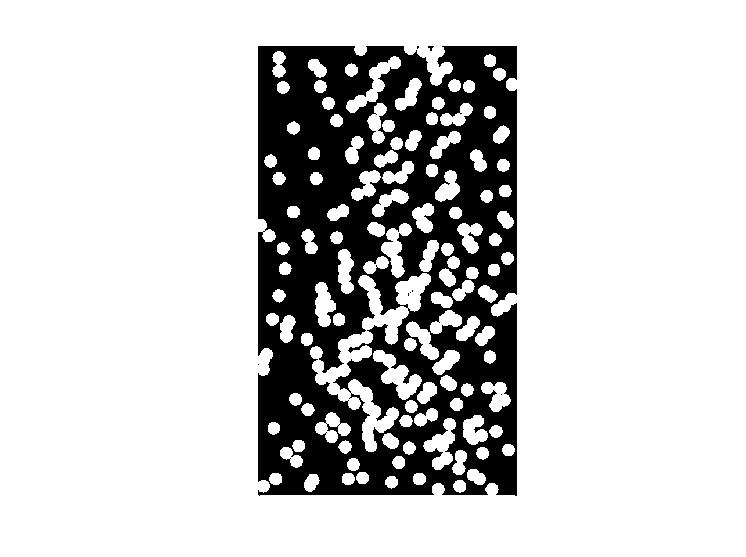
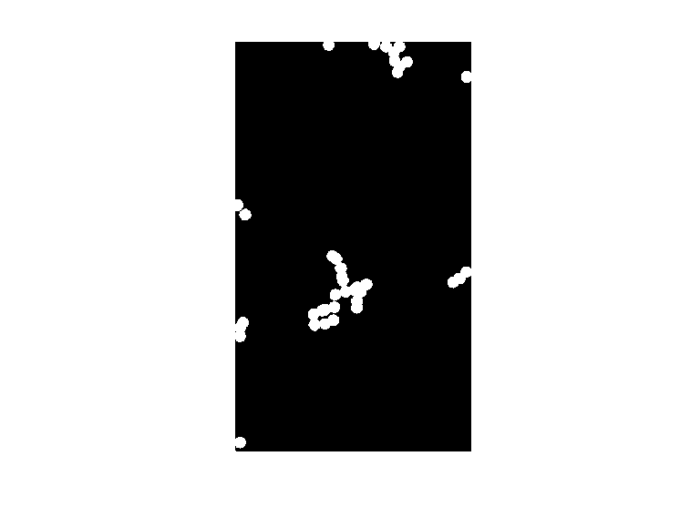
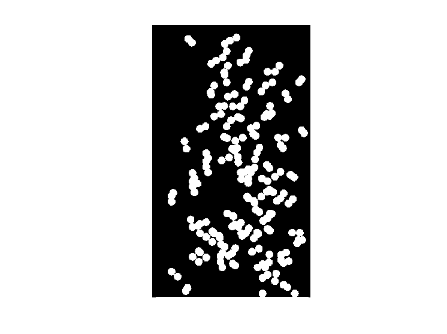
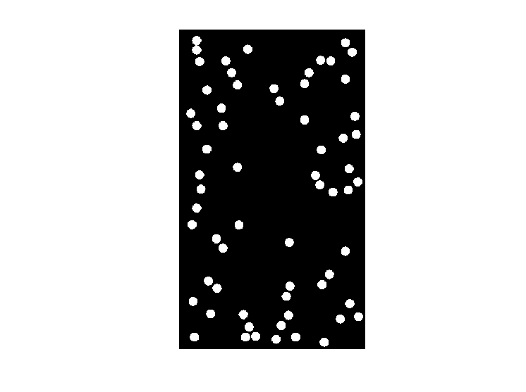
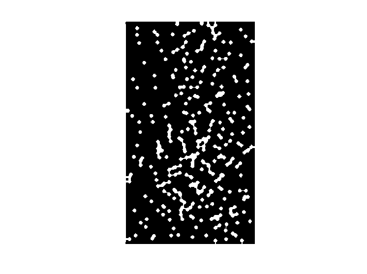

Estudante: André Alfonso Peixoto
GONZALEZ, R; WOODS, R; EDDINS, S. Digital Image Processing Using MATLAB 2. 2. ed. Gatesmark Publishing, 2009. Mathworks Stack Exchange Wikipedia
%Uma etapa de pré-processamento para um aplicativo de microscopia aborda o problema de isolar partículas redondas individuais de partículas semelhantes que se sobrepõem em grupos de duas ou mais partículas (ver imagem a seguir**). %Partindo do princípio de que todas as partículas são do mesmo tamanho, proponha um algoritmo morfológico que produza três imagens que possuam, respectivamente: %(a) Apenas partículas que se fundiram com a borda da imagem. %(b) Apenas partículas sobrepostas. %(c) Apenas partículas que não se sobrepõem. %(d) tentar separar Apenas partículas para que não “se sobrepõem” (processar item b depois unir com o restante). % -- A Ideia é deixar pronto para aplicar um algoritmo de contagem (utilize 'regionprops') % ** FigP0936(bubbles_on_black_background).tif %
pkg load signal; pkg load symbolic; pkg load image;
img = imread("FigP0936(bubbles_on_black_background).tif"); figure("Name","Figura original"); imshow(img);
img_bordas = bwareaopen(img,5000); figure("Name","Bordas"); imshow(img_bordas,[]);
imgBordasSobrepostas = bwareaopen(img,570); imgSobrepostas = imgBordasSobrepostas - img_bordas; figure("Name","Sobrepostas"); imshow(imgSobrepostas,[]);
imgIsoladas = img - imgSobrepostas - img_bordas; figure("Name","Isoladas"); imshow(imgIsoladas,[]);
imgerode = imerode(img,ones(8,8)); figure("Name","Nao Sobrepostas"); imshow(imgerode);